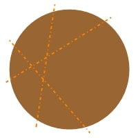
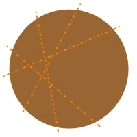

Keywords: computer, input, storage, data, processing, output, RAM, CPU, primary memory, abacus, base, decimal, binary, roman numerals, exponents
Required Materials: pencil, paper, scissors (optional)
Let's take a second to think. You might be wondering, "...why is he asking us this? We know what a computer is, after all, we couldn't be in class together without one!" That's completely fair. Our generation has had more exposure to this tech than any other.
I'm asking this for a very good reason, though. You'll understand why in just a moment. In order for us to learn how to code, we need to have a strong foundation to build upon. So, what do you think? When you think about a computer, what comes to mind?
I appreciate your participation! We're going to work together to refine our understanding of what computers are, so that by the end, you might even be able to teach your friends something new! If I were asked this question when I was your age, I'd probably say something below:
All of these quotes mainly describe what a computer can do, not necessarily what they ARE. At their core, computers themselves can actually be defined in a much simpler way. To truly understand something by its definition, it's important that we don't include any unnecessary details.
Before I give you this definition, though, I'm going to make a claim. Then, I will let you all decide if that claim is true or false. The claim:
A microwave isn't a computer. True or false?
What do you think? Am I right or wrong? Let me know your honest opinion, and then we can discuss. Whatever answer you side with, I encourage you to defend your stance!
Let's turn our focus to today's video. We'll investigate the precise definition of a computer now! Go ahead and watch [0:24-2:31] of today's video.
If you initially said that my claim was false, great job! That's correct. If you initially said that my claim was true, no worries! Let me explain why a microwave actually IS a computer, using the definition we just saw from the video. Recall, a computer does four things:
A microwave actually does all four of these every time that you use it! When you place food into the microwave, it takes the food as input (1). Then, it stores that food (2) inside the compartment. After this has happened, the microwave then begins to process the food (3) by rotating and heating it. After the food is cooked, it outputs the food (4), so that you can eat it!
In this example, can anyone tell me what our computer's data is? Click the tab below to see the answer.
Now, let's explore what's inside a computer! Watch [0:58-2:31] to learn about two essential components.
RAM (Random Access Memory) is like your computer's short-term memory - it temporarily stores data that your computer is actively using. Think of it like your desk when you're doing homework: you keep the books and papers you need right now within easy reach. Programmers call this your computer's primary memory, because it works closely with the component below to accomplish tasks.
CPU (Central Processing Unit) is the "brain" of your computer. Just like your brain receives information from your body, processes it, makes decisions, the CPU processes all the data and instructions that make your computer work. The CPU is fed data from your computer's primary memory, and then it processes that data when performing some task.
There are many other components inside a computer, but we'll focus on these two for today. This is because knowing how the CPU and RAM work together will strengthen your understanding in the concepts that will follow. If you'd like to know more about how they work together, feel free to ask some questions! I took a course called Computer Organization, where I studied these components in greater detail. It's quite fascinating, actually!
You might be surprised to learn that one of the earliest computers didn't use electricity at all! Watch [2:32-6:38] to discover how the abacus works as a computer.
Now that we've watched the clip, let's do some reflection. Do you think that now, if you picture a computer in your head, what appears might be a bit different than at the beginning of this lecture? I certainly hope so! Computers as a concept are quite abstract; so long as an object satisfies the four requirements listed, we can say it is a computer. It's okay if this takes some getting used to--I know it took me a little bit to grasp when I first started. Let's list why an abacus satisfies the four characteristics of a computer:
To solidify this new knowledge, I challenge you to list the simplest object you can think of, that satisfies the requirements of a computer! There are many possibilities (check the contents of your room, I bet you'll find a candidate)!
We all know that counting is as fundamental of a skill as reading or writing. So much of our life revolves around numbers--we use them to understand the passage of time, to track quantities, and to identify objects. I know this is probably pretty obvious to most of you. However, computer scientists spend a significant amount of their time thinking about and working with numbers. That's why we'll work on strengthening our foundational knowledge of numbers, and at a higher level, number systems. In order to wield the power of modern computing, it is important that we have a rock-solid understanding of the rich history of numbers. For the subsection below, we'll need to watch [6:39-11:42]. Since this is a longer clip, we'll definitely take some pauses and discuss what we're learning.
Since ancient times, humans have understood the importance of numbers. As a result, people devised their own methods of tracking quantites for their own benefit. In the list below, you'll see examples of these counting strategies throughout history:
As you can see, humanity has a tendency to alter their counting methods and create new ones, when their situation requires it. This is quite important to understand, and you'll see why in a moment! Let's take a deeper look at our current numbering system.
Before we dive deeper, let's think about how we normally count. When you see the number 347, you probably don't think much about it, but there's actually a pattern hiding in plain sight! It all has to do with the number of characters we use when counting (more on this later).
The number 347 is really: 300 + 40 + 7
I'm pretty sure that all of you were already taught this in school. With that in mind, we're just doing some review. I promise that these explanations will come in handy when we start looking at the numbering system that computers use. So, let's break the representation of 347 down even further. Each digit in 347 has a specific "place value" (e.g., ones, tens, hundreds, thousands, etc.):
Here's where it gets interesting! We can rewrite the "place values" using powers of 10, which allows us to organize them in a uniform and predictable way:
So 347 = (3 × 10²) + (4 × 10¹) + (7 × 10⁰)
This numbering (that I'm certain you're all very familiar with) is called the decimal system. That's because it uses 10 different digits (0-9). The root of the word, "deci", means 10! Computer scientists also call the decimal number system base-10, from the number of unique characters used to represent the numbers. We humans use base-10 because the majority of people have ten fingers on each hand!
The concept of base within numbering systems is directly tied to the total unique characters that are available to use. The decimal number system is base-10, because like I mentioned above, there are 10 unique digits used when representing a number. The method shown above, where we break a number into exponents multiplied by values is very useful.
In fact, you can represent any number using this method, not just the decimal system! To put it in terms of formal mathematics (WARNING: NERDY STUFF AHEAD), we can write any number as the summation of the products of its digits and their ordinal magnitude. This idea is shown in the generalized mathematical formula below:
For decimal (base-10):
\[N = \sum_{i=0}^{n} d_i \times 10^i\]For any base-b number system (including binary):
\[N = \sum_{i=0}^{n} d_i \times b^i\]Where:
I don't expect anyone here to memorize these formulas or the formal definition describing it. Saying that a decimal number is "...the summation of the products of its digits and their ordinal magnitude..." is a mouthful even for me. However, I do want you to understand the overall idea--it will prove to be useful in the following sections.
Could we use a different base instead of 10? Absolutely! We could create a base-3 system using only digits 0, 1, and 2. Or base-5 using digits 0-4. What's cool is that we don't even have to use digits! We could use letters, emojis, shapes--as I've been saying, the only thing that determines a number system's base is the number of unique characters available for use, and the meaning we give them. The possibilities are truly endless!
Computer scientists often use other number systems, including base-8 (also called the octal number system), base-16 (also called the hexadecimal number system), and of course, base-2 (also called the binary number system). Don't worry about octal or hexadecimal just yet, today we're only going to focus on binary.
One last question before we move on. Why exactly would we want to use a different base when representing numbers, particularly base-2 (binary)? We already have the decimal system, and that works just fine for our human needs. Well, computers actually have a VERY good reason... What do you think it is? I'd love to hear your opinion, even if it's just a guess! I like to hear from my students.
Watch [9:15-11:35] to discover the binary number system!
Binary is the language of computers, and it's fascinatingly simple yet powerful. Instead of using ten different digits like our decimal system, binary uses only two digits: 0 and 1. This is why it's called "binary" - from the Latin "binarius" meaning "consisting of two." These binary digits, which we commonly call "bits," are the fundamental building blocks of all digital information. When we group 8 bits together, we get what we call a "byte," which can represent 256 different values (2^8 = 256). Every piece of data in a computer - whether it's text, images, or videos - is ultimately stored as collections of these bits and bytes.
Let's look at how counting works in both systems:
| Decimal (Base 10) | Binary (Base 2) |
|---|---|
| 0 | 0 |
| 1 | 1 |
| 2 | 10 |
| 3 | 11 |
| 4 | 100 |
| 5 | 101 |
| 6 | 110 |
| 7 | 111 |
| 8 | 1000 |
| 9 | 1001 |
| 10 | 1010 |
Notice something interesting? In decimal, once we hit 9, we run out of single digits. So what do we do? We add a new digit on the left (the "tens" place) and reset the right digit back to 0, giving us 10. As we keep counting, we go through 10, 11, 12... all the way to 19, before adding another "tens" value to get 20.
Binary works exactly the same way, but we run out of digits much faster! After 0 and 1, we have no more single digits left. So just like in decimal, we add a new digit on the left and reset, giving us "10" in binary. But don't confuse this with the decimal 10! In binary, "10" actually represents the decimal value 2.
Let's pause for a moment here. I understand this might feel a bit strange at first—seeing "10" representing the number 2 can be confusing. Don't worry! This is completely normal when learning a new number system. Your brain is so used to "10" meaning "ten" that it takes a little practice to adjust. Just remember that "10" in binary means "one group of twos plus zero ones."
Remember our discussion about place values in decimal? Let's apply the same concept to binary, but instead of powers of 10, we'll use powers of 2:
| 27 | 26 | 25 | 24 | 23 | 22 | 21 | 20 |
| 128 | 64 | 32 | 16 | 8 | 4 | 2 | 1 |
Just like we read decimal numbers from left to right, we do the same with binary. Each position represents a power of 2, starting with 20 = 1 on the far right.
As the video shows, we can think of an abacus to help us understand binary. Let's recall our discussion of the decimal abacus first:
In a decimal abacus, each column has 10 possible states (0-9), and as you move left, each column represents a value 10 times larger than the previous one. When the video says "notice how each bar on the abacus has its own multiplier, with every higher being ten times larger than the one below it," it's highlighting a key feature of place-value systems.
Now, imagine a binary abacus. It would work the same way, except:
So instead of columns representing 1, 10, 100, etc. (powers of 10), in binary they represent 1, 2, 4, 8, 16, etc. (powers of 2).
Let's take a binary number like 101 and figure out what it means in decimal:
Binary 101 = ?
Working right to left:
Adding them up: 4 + 0 + 1 = 5
Therefore, binary 101 = decimal 5
As the video explains: "So, if we have the binary number 101, this means that we have 1 four, 0 twos, and 1 one. Add all of these together, and we get the number 5 in decimal."
Now it's time for a hands-on activity! Watch [11:35-15:13] for instructions.
You'll need:
Instructions:
These cards will help you convert decimal numbers to binary! Arrange them in order from left to right (16, 8, 4, 2, 1) and we'll be ready for some binary practice.
Watch [14:45-16:47] to learn how to use your cards.
Now, let's practice converting decimal numbers to binary! Use your cards to represent these numbers:
7 = 111 (4 + 2 + 1)
To represent 7, you would use cards 4, 2, and 1. In binary, this is 111.
8 = 1000
To represent 8, you would use only the 8 card. In binary, this is 1000.
11 = 1011 (8 + 2 + 1)
To represent 11, you would use cards 8, 2, and 1. In binary, this is 1011.
16 = 10000
To represent 16, you would need a new card for 16 (which we have in our set). In binary, this is 10000.
15 = 1111 (8 + 4 + 2 + 1)
To represent 15, you would use cards 8, 4, 2, and 1. In binary, this is 1111.
23 = 10111 (16 + 4 + 2 + 1)
To represent 23, you would use cards 16, 4, 2, and 1. In binary, this is 10111.
29 = 11101 (16 + 8 + 4 + 1)
To represent 29, you would use cards 16, 8, 4, and 1. In binary, this is 11101.
32 = 100000
To represent 32, you would need a 6th card with the value 32 (2^5). In binary, this is 100000.
Want more practice? Try these additional numbers:
9 = 1001 (8 + 1)
To represent 9, you would use cards 8 and 1. In binary, this is 1001.
14 = 1110 (8 + 4 + 2)
To represent 14, you would use cards 8, 4, and 2. In binary, this is 1110.
21 = 10101 (16 + 4 + 1)
To represent 21, you would use cards 16, 4, and 1. In binary, this is 10101.
25 = 11001 (16 + 8 + 1)
To represent 25, you would use cards 16, 8, and 1. In binary, this is 11001.
Now that we've practiced working with binary, you might be wondering: "Okay, I get how it works, but why does this matter?" Great question! It's time for another video clip, let's watch [15:13-17:47], where we'll learn why binary is important for computers.
Binary matters because of how computers work at their most fundamental level. Electronic circuits have only two reliable states: OFF (0) or ON (1). It's perfect for computers because electronic components like transistors can either be "off" (no electricity flowing) or "on" (electricity flowing). This makes binary the natural language of computing!
Here's why binary is so important:
Think about this: every photo you've taken, every game you've played, every message you've sent—all of these are ultimately just collections of binary digits (bits). Pretty amazing, right? It's incredible to think about the amount of effort and learning that was done to put all of this in place!
Bonus: In the box below, I have a video of an interesting wooden model that someone built, that counts in binary! All he has to do is flip the mechanism on the right-most side, and it handles the rest. I thought this was really neat, maybe you all will as well.
Ready for a fun challenge? Watch [17:47-19:13] to learn about the circle cutting problem!

Let's take a mental break from binary and have some fun with a different kind of puzzle. Imagine you have a circular pizza (or pancake, if you prefer breakfast food). Here's the twist: instead of cutting it into equal slices like we normally would, we're going to try to create as many different pieces as possible with each straight line cut.
The Rules:
The Challenge: How many regions can you create with each additional cut? Can you find a pattern?
Let's start tracking our results:
| Number of Cuts | Maximum Regions | New Regions Added |
|---|---|---|
| 0 | 1 | - |
| 1 | 2 | 1 |
| 2 | 4 | 2 |
| 3 | ? | ? |
| 4 | ? | ? |
| 5 | ? | ? |
Let's think step by step:
Hint: Drawing this out on paper will really help!
With 3 cuts (where each cut crosses all previous cuts), we get 7 regions!
We started with 4 regions from our first two cuts. The third cut can cross both previous lines, creating 3 new regions. So 4 + 3 = 7 regions total.
With 4 cuts (where each cut crosses all previous cuts), we get 11 regions!
We had 7 regions from our first three cuts. The fourth cut can cross all three previous lines, creating 4 new regions. So 7 + 4 = 11 regions total.
Do you see a pattern forming? Let's update our table with what we've discovered:
| Number of Cuts (n) | Maximum Regions | New Regions Added |
|---|---|---|
| 0 | 1 | - |
| 1 | 2 | 1 |
| 2 | 4 | 2 |
| 3 | 7 | 3 |
| 4 | 11 | 4 |
| 5 | 16 | 5 |
Notice something interesting? With each new cut (n), we add exactly n new regions to our total! This happens because each new line can cross all previous lines once, creating n new regions.
So, our pattern is:
This sequence of numbers (1, 2, 4, 7, 11, 16, ...) has a special name in mathematics. It's called the "Lazy Caterer Sequence" or "Central Polygon Numbers." Mathematicians find these patterns fascinating because they show up in all sorts of unexpected places!
The formula for the maximum number of regions (R) with n straight line cuts is:
\[ R = \frac{n(n+1)}{2} + 1 \]Proof/Derivation:
Let's see why this formula works:
The sum \(1 + 2 + 3 + \ldots + n\) is a well-known arithmetic series that equals \(\frac{n(n+1)}{2}\).
\[ R = 1 + \frac{n(n+1)}{2} \] \[ R = \frac{n(n+1)}{2} + 1 \]Let's verify with our examples:
Want to explore more? Check out the full mathematical explanation (SUPER NERDY STUFF!)
There's actually an easier way to solve this problem without having to draw all the lines and count all the regions. Once we recognize the pattern, we can use extrapolation to predict the results!
Let's examine our results so far and look for a pattern:
| Number of Cuts | Total Regions | New Regions Added |
|---|---|---|
| 0 | 1 | - |
| 1 | 2 | 1 |
| 2 | 4 | 2 |
| 3 | 7 | 3 |
| 4 | 11 | 4 |
Do you see it? The number of new regions created with each cut equals exactly the cut number itself!
This pattern is a perfect example of what computer scientists call a recursive relationship. Recursion is when something is defined in terms of itself. In our case, the number of regions after n cuts depends on the number of regions after n-1 cuts.
We can express this relationship using a recursive formula:
\[ R(n) = R(n-1) + n \]Where:
In computer programming, we could implement this recursive solution like this:
function calculateRegions(cuts) {
// Base case - stop the recursion
if (cuts == 0) {
return 1;
}
// Recursive case - use the previous result
return calculateRegions(cuts - 1) + cuts;
}
Using this function, we can easily calculate:
Recursion is a powerful concept in computer science that allows for elegant solutions to complex problems. It's especially useful when each step in a problem builds directly on the previous step, as in our circle cutting problem!
The real-world advantage of this approach is that it allows us to make predictions without doing all the work of drawing and counting. This is similar to how computer programs can solve problems without brute force approaches.
For the mathematically curious, our recursive formula can also be converted to the direct formula we saw earlier:
\[ R(n) = \frac{n(n+1)}{2} + 1 \]Both formulas produce the same results, but the recursive approach often feels more intuitive for many people, while the direct formula is more efficient for calculating large values!
You might be wondering, "What does cutting circles have to do with programming or computers?" Great question!
This problem illustrates several important concepts:
Plus, it's just fun to think about problems in different ways! Computer science is as much about creativity and problem-solving as it is about writing code.
For your own exploration, try extending the pattern to 6 or 7 cuts. Can you predict how many regions you'll get without drawing it out? Use the formula to check your answer!